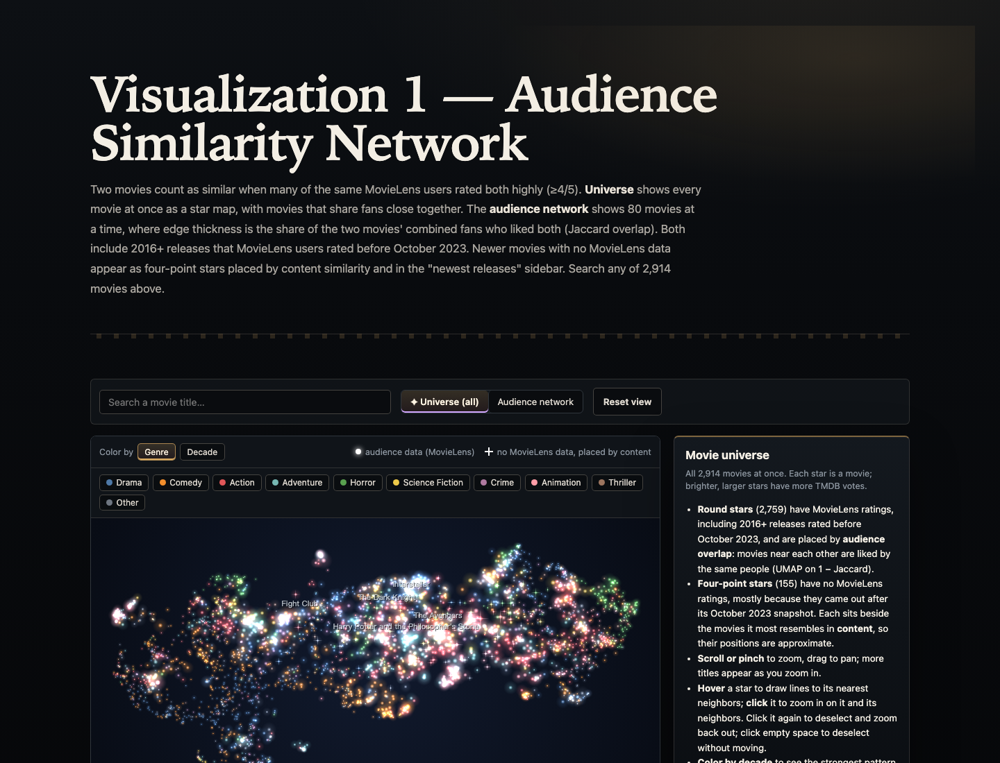
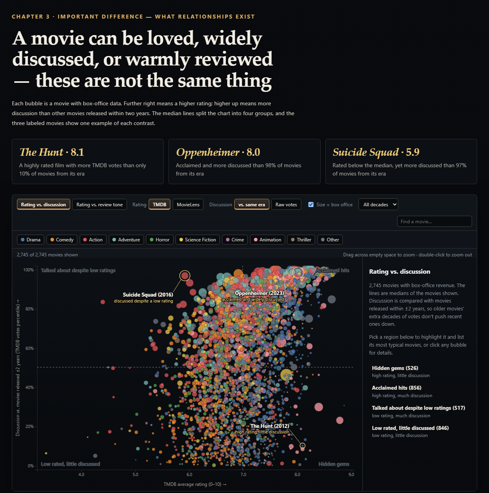
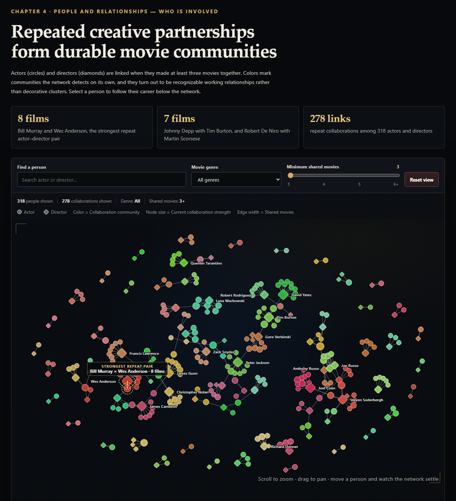
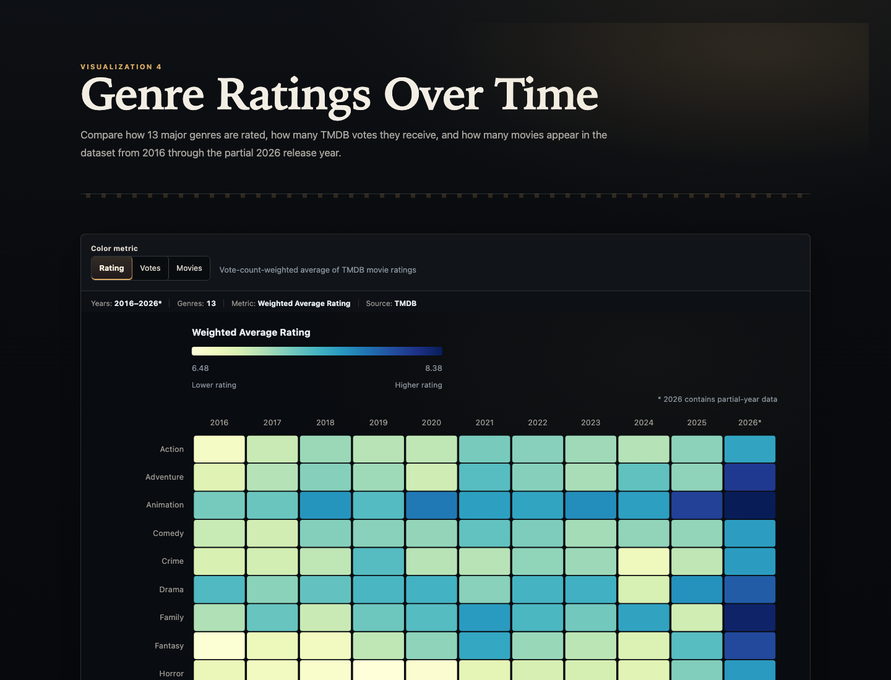

One score cannot explain why a movie matters
Movie websites often reduce a title to a rating, genre, cast list, and popularity score. These values are useful for lookup, but they do not explain why two movies appeal to the same viewers, why a highly rated film may receive little attention, or how repeated creative partnerships connect groups of movies. WatchNext addresses this gap through an interactive website built around one question: What makes audiences love a movie, and if they love one movie, what else might they love?
The intended audience is general moviegoers who want to discover films and understand the relationships behind ratings and recommendations. Our research questions ask how genre reception changes over time, which movies attract similar audiences, how rating differs from voting activity and review tone, and which actor–director partnerships recur across films and careers. Visualization is important because these questions involve spatial neighborhoods, multivariate comparisons, temporal patterns, and networks that are difficult to understand from a table or a single score. Five interactive views let users move from an overview to exact details while retaining the context needed to interpret each result.
Connecting audience behavior with movie context
Data sources and acquisition
The project combines MovieLens 32M with data collected from the TMDB API. MovieLens contains 32,000,204 ratings and 2,000,072 tags from 200,948 users across 87,585 movies. TMDB provides genres, release dates, ratings, vote counts, budget, revenue, cast, directors, keywords, and available written reviews. The historical track began with high-rating-count MovieLens titles matched to TMDB IDs. A second track was collected directly from TMDB to improve recent coverage because MovieLens ends in October 2023 and becomes thinner for newer releases. After duplicate TMDB IDs were removed, the processed dataset contained 2,914 movies: 1,998 historical titles and 916 recent titles.
Cleaning, transformation, and analysis
We parsed release years and genres, normalized external IDs, validated MovieLens ratings, removed duplicate user–movie pairs, and treated zero or clearly unrealistic budget and revenue values as missing. We collected each movie's top billed cast, directors, keywords, and reviews from TMDB. In total, 11,481 reviews covering 2,648 movies were cleaned and deduplicated. Review sentiment was estimated with siebert/sentiment-roberta-large-english, and review keywords were extracted with TF–IDF.
Visualization-specific transformations were created in Python. Audience similarity uses Jaccard overlap between users who rated both movies at least 4 out of 5; UMAP places those distances in the Movie Universe. Discussion is measured as TMDB vote-count percentile among movies released within ±2 years. Collaboration strength counts shared actor–director films, and network communities are detected from the collaboration structure. Genre–year ratings are weighted by each movie's TMDB vote count. Exported JSON files keep browser loading focused and reproducible.
Visualization technologies and implementation
The data pipeline uses Python, pandas, NumPy, scikit-learn, UMAP, NetworkX, Transformers, and TF–IDF. The website uses HTML, CSS, JavaScript, and D3.js. Canvas supports the dense Movie Universe, while SVG supports the scatterplot, networks, heatmap, axes, and transitions. Shared styling creates a consistent cinematic interface. Search, filters, tooltips, zooming, dragging, selection, reset behavior, and responsive layouts were tested in the browser.
Five views reveal different parts of movie reception
The final website contains five visualization views organized into four connected story topics. The Movie Universe and Audience Network are separate views but work together as Visualization 1 on the website: the first provides an overview and the second provides details for one selected movie. The homepage presents the heatmap first to establish context, then follows Oppenheimer through audience, response, and collaboration views.
Visualization 1: Movie Universe
What and goal. The Movie Universe places all 2,914 movies as stars. The 2,759 movies with MovieLens data are positioned by audience overlap; 155 newer movies without audience data use content-based placement and a four-point shape. The view asks where a movie belongs among titles liked by similar audiences.
Interactions and finding. Users can search, hover, zoom, pan, click a movie, and switch color between genre and decade. The layout reveals that audience neighborhoods are shaped by both era and genre: 77.1% of stored neighbors share a release decade and 90.0% share at least one genre. A ring marks the eight Harry Potter films as one recognizable neighborhood.

Visualization 2: Audience Network
What and goal. The Audience Network turns the universe overview into details for one selected movie. Links represent audience overlap between movies, while side panels explain shared genres, people, keywords, and content-based suggestions for recent titles. It addresses the question: what else do viewers of this movie also like?
Interactions and finding. Users can search for a title, recenter the network, drag nodes, highlight a genre, inspect exact similarity values, and move between connected movies. Across 33,108 stored neighbor relationships, 36.8% share the same primary genre compared with 12.2% of all movie pairs. The result shows that audience similarity adds evidence beyond a simple genre label while still reflecting genre and release era.
Visualization 3: Performance and Discussion Scatterplot
What and goal. Each bubble represents a movie with box-office data. The default view compares rating with discussion relative to movies released within ±2 years; a second view compares rating with positive written-review tone. Bubble size represents revenue and color represents primary genre. The goal is to distinguish acclaim, attention, and written response.
Interactions and finding. Users can search, filter by genre or decade, switch rating sources, select a quadrant, brush to zoom, and open movie details. The Hunt is rated 8.1 but has more votes than only 10% of movies from its era. Oppenheimer is rated 8.0 and is more discussed than 98%, while Suicide Squad is rated 5.9 but is more discussed than 97%. High ratings and high attention are therefore not equivalent.
Open the Performance and Discussion Scatterplot →

Visualization 4: Actor–Director Collaboration Network
What and goal. This network contains 318 actors and directors connected by 278 repeat-collaboration links. Circles are actors, diamonds are directors, node size is current collaboration strength, edge width is shared movies, and color is a detected collaboration community. A linked career chart maps year, TMDB rating, revenue, and primary genre for the selected person.
Interactions and finding. Users can search, filter by the genres of shared movies, change the minimum collaboration threshold, zoom, pan, drag individual nodes, select a collaborator, and reset the view. The genre filter recomputes every link from shared movie IDs. Bill Murray and Wes Anderson form the strongest displayed pair with eight shared films; Johnny Depp–Tim Burton and Robert De Niro–Martin Scorsese each share seven. Repeated partnerships form interpretable creative communities.
Open the Collaboration Network →

Visualization 5: Genre Ratings Heatmap
What and goal. The heatmap compares 13 major genres across 2016–2026. Rows are genres, columns are years, and color can represent vote-count-weighted rating, total vote count, or number of movies. It asks how the story changes when acclaim, voting activity, or dataset coverage becomes the metric.
Interactions and finding. Hovering highlights a genre row and year column and shows all three measures. Clicking a cell opens the movies behind its value, while metric changes update the legend and leading-genre annotation with a short transition. Across complete years 2016–2025, Animation has the highest weighted rating at 7.47, while Action has about 2.05 million votes despite a 6.98 rating. The 2026 column is explicitly marked as partial-year data.
Open the Genre Ratings Heatmap →

Interaction should clarify the question
What–Why–How evaluation
What. WatchNext combines quantitative attributes—ratings, votes, revenue, years, similarity, and collaboration counts—with categorical attributes such as genre, role, and community. It also uses review text through sentiment and keywords. Why. The main tasks are to locate a known item, discover related items, compare groups, identify outliers, inspect trends, and move from overview to detail. How. Position shows similarity or quantitative value; color distinguishes genre, decade, community, or heatmap magnitude; size represents votes, revenue, or collaboration strength; shape separates data coverage and actor/director roles; links represent audience or collaboration relationships. Search, filtering, selection, zoom, drag, and animated transitions support exploration without permanently adding labels.
Strengths and interaction effectiveness
The strongest design decision is that each interaction serves a specific question. Search supports known-item lookup, filters make comparisons, zooming reveals dense regions, and selection opens exact details. The Universe and Audience Network create a clear overview-to-detail sequence, while the collaboration network and career view connect structure with time. Finding-style headlines, evidence cards, on-chart annotations, and a recurring Oppenheimer example make important results visible before interaction. Consistent typography, controls, dark cinematic styling, and restrained animation make five views feel like one project.
Weaknesses, limitations, and improvements
The dataset favors popular titles with many MovieLens ratings or TMDB votes. MovieLens ends in October 2023, so the newest movies use content placement rather than equivalent audience overlap. TMDB vote count measures activity on one platform, not total popularity. Review samples are small for many films, sentiment may misread dark subject matter, and missing revenue excludes many streaming-first releases from the scatterplot. The collaboration network also focuses only on people with at least five movies and pairs with at least three shared films.
Dense views still require effort on small screens, and the five views do not share a persistent selection. The homepage guides users through Oppenheimer, but it does not automatically carry that selection between charts. Future work should add cross-view state, improve mobile detail panels, compare alternative similarity thresholds, and conduct a formal task-based user study. Current browser testing covers loading, search, filters, metric switching, selection consistency, reset, zoom, drag, tooltips, responsive layout, and console errors, but it does not replace evaluation with representative users.
Movie reception is multidimensional
WatchNext shows that the highest-rated genre is not the genre with the most voting activity. Movies liked by similar audiences form neighborhoods shaped by both release era and genre. Ratings, attention, and written-review tone can disagree, while repeated actor–director partnerships reveal another structure behind the films.
For viewers, the complete visualization provides a transparent discovery process rather than a single automatic recommendation. A user can begin with a familiar movie, inspect its audience neighborhood, compare whether related titles are acclaimed or simply widely discussed, and follow the people behind them. Combining several forms of evidence supports better understanding, exploration, and communication about why a movie may be worth watching.
Team contributions
Jiaxuan
TMDB data acquisition and processing, including metadata, cast, directors, keywords, and reviews; the Collaboration Network and Genre Heatmap, including their exports, filters, animations, and linked details; overall website layout, cinematic visual design, interaction polish, and cross-page consistency.
Muyu
Remaining data processing, including MovieLens cleaning, validation, and audience-similarity calculations; the Movie Universe, Audience Network, and Performance and Discussion Scatterplot with their search, filtering, selection, and detail interactions.
Both team members contributed to project framing, integration, debugging, interpretation, documentation, and presentation preparation.